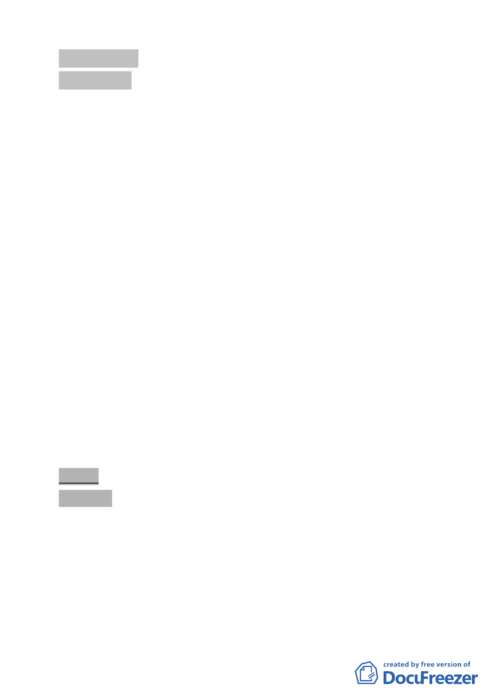

肆、臨時提案
臨時提案 一
案名：「為本市士林區至善段六小段 141、142-10、142-11 地號等
3 筆機關用地調整都市計畫指定使用用途案」，報請 公鑒。
案情概要說明：
一. 本案係市府依據都市計畫法第 27 條規定，為配合中央興建
之重大設施，協助國立故宮博物院辦理都市計畫變更。
二. 經查案內本市士林區至善段 6 小段 141、142-10、142-11 地
號等 3 筆土地，係市府 91 年 11 月 28 日府都一字第
09125794800 號公告『臺北市軍事用地第一階段通盤檢討案
內「原國防管理學校」計畫案』劃設為「機二用地（供國安
局及軍事機關使用）」迄今。
三. 本案之「機二用地」目前為國家安全局所有，並為維護管理
機關，原預定作為該局之「情報教育學院」及「第二預備辦
公室」使用，惟目前該局業將另覓地設置，未來確定不再使
用前開機關用地。
四. 爰此，本案「機二用地」前經國家安全局 98 年 2 月 24 日函
同意提供國立故宮博物院需求單位使用。擬報請本會同意備
查調整取消指定用途以彈性運用，後續將納入地區都市計畫
通盤檢討中配合修正。
五、申請及辦理單位：臺北市政府（都市發展局）。
決議：洽悉。
伍、散會（11 時 50 分）。
- 15 -